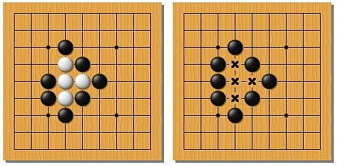
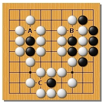

When a stone or group of stones is surrounded by opponent
stones, so that it does not remain the points of freedom,
it is captured and removed from the board.

It is forbidden to make a move, which resulted in the group
loses its last point of freedom (the suicidal course).
An exception is the case where the result of this move
are captured enemy stones.

A stroke in the black forbidden
B move in black is allowed, he kills a group of white,
C move in black is allowed - not a suicide.